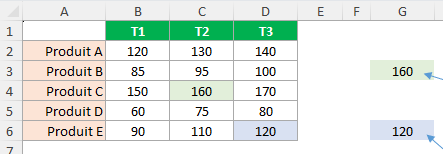
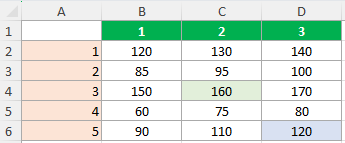
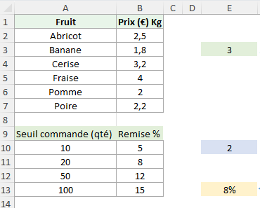
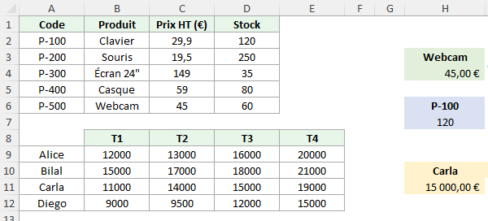

Imagine un tableau à double entrée : en lignes, des produits (A2:A6) ; en colonnes, des trimestres T1–T3 (B1:D1). On veut pouvoir pointer n’importe quelle case sans la souris, uniquement avec ses coordonnées (ligne/colonne). C’est exactement ce que fait INDEX : on lui donne une matrice, un numéro de ligne et, si besoin, un numéro de colonne, et il renvoie la valeur.

(Capture) Tableau Produits × Trimestres.
La matrice (ou plage) n’est pas toute la feuille, mais le rectangle choisi. Ici : B2:D6.
Les numéros de ligne/colonne sont relatifs à la matrice. Dans B2:D6 : ligne 1 = ligne 2 de la feuille (Produit A) ; colonne 1 = colonne B (T1).
Si la matrice est une seule colonne, on n’indique pas de colonne dans INDEX.

(Diagramme) Numérotation relative des lignes/colonnes dans la matrice.
Syntaxe (FR)
=INDEX(matrice; no_ligne; [no_colonne])
matrice : ex. B2:D6
no_ligne : position dans la matrice (1, 2, 3…)
no_colonne : position de la colonne (optionnel si une seule colonne)
4) Démonstration guidée
Exercice 1 — Atteindre une case par coordonnées
Objectif : valeur ligne 3, colonne 2 dans B2:D6 (écrire en G3).
=INDEX(B2:D6; 3; 2)
Résultat : 160
Exercice 2 — Index sur une colonne simple
Objectif : renvoyer la 5ᵉ valeur de D2:D6 (écrire en G6).
=INDEX(D2:D6; 5)
Résultat : 120
Exercice 3 — INDEX qui renvoie toute une ligne
Objectif : renvoyer toute la ligne 2 de B2:D6 et l’afficher en B9:D9.
On dispose de listes et de tables (noms, codes, seuils…). EQUIV sert à retrouver la POSITION d’un élément dans une plage (1, 2, 3, …). Ensuite on combine avec INDEX pour renvoyer la valeur associée.

(Capture) Liste des fruits & seuils de remise.
EQUIV renvoie une position, pas une valeur.
Le 3ᵉ argument (type) contrôle la recherche : 0 exacte, 1 approximative croissante, -1 approximative décroissante.
Pour 1 et -1, la plage doit être triée dans le bon sens.
Syntaxe (FR)
=EQUIV(valeur_cherchée; plage_recherche; [type])
0 : exact (plage non triée OK)
1 : approx. (plage triée croissante) → plus grande valeur ≤ la valeur cherchée
-1 : approx. (plage triée décroissante) → plus petite valeur ≥ la valeur cherchée
4) Démonstration guidée
Exercice 1 — Recherche exacte (type = 0)
Objectif : position de "Cerise" dans A2:A7 (écrire en E3).
=EQUIV("Cerise"; A2:A7; 0)
Résultat : 3
Exercice 2 — Approximative croissante (type = 1)
Objectif : pour 43 unités, position dans les seuils croissantsA10:A13 (=10, 20, 50, 100) — écrire en E10.
On veut des recherches flexibles : par nom de produit, par code, ou à l’intersection d’un commercial et d’un trimestre. EQUIV trouve la position, INDEX renvoie la valeur.

(Capture) Liste de prix & matrice commerciale.
On combine EQUIV (où ?) et INDEX (quoi ?).
Les plages recherche et retour doivent correspondre (même hauteur/largeur selon le cas).
Encapsuler avec SI/ET ou SIERREUR pour des messages propres.